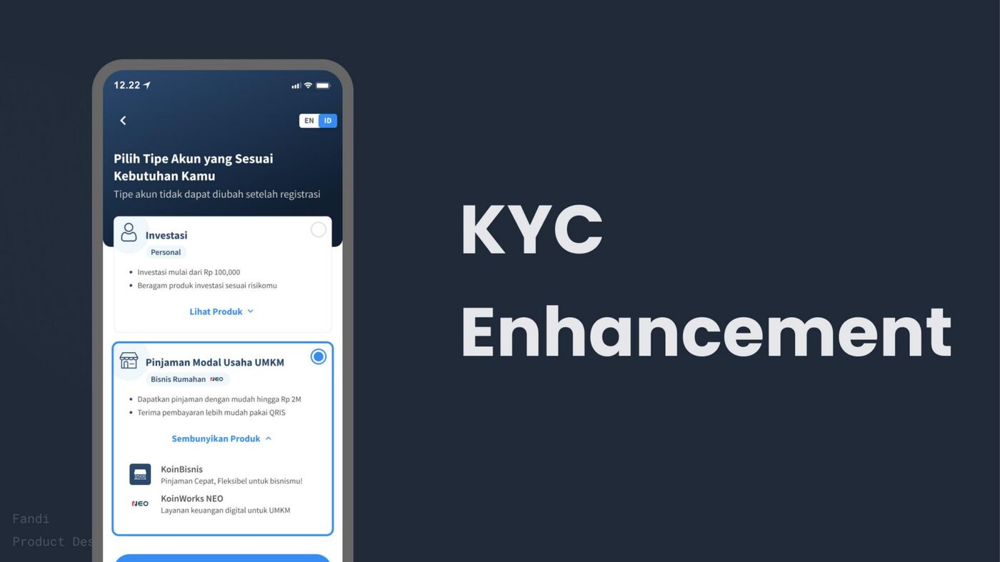
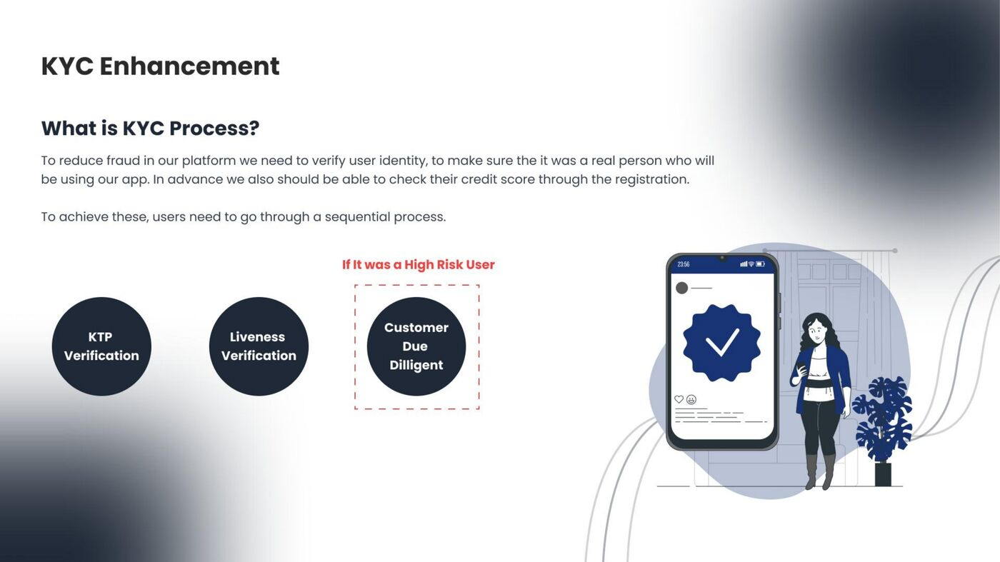
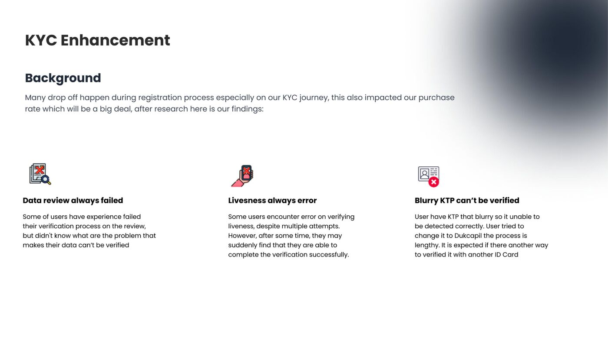
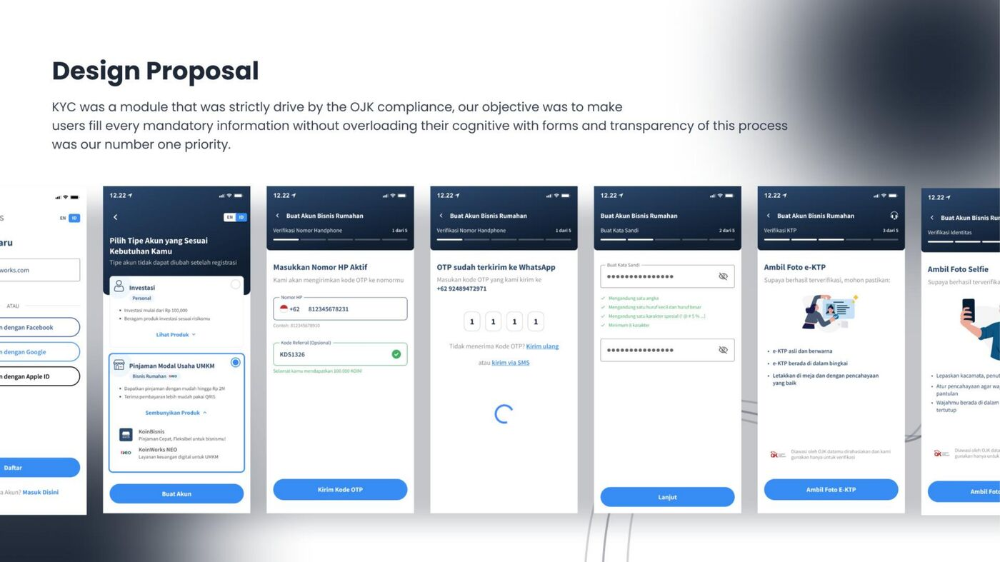
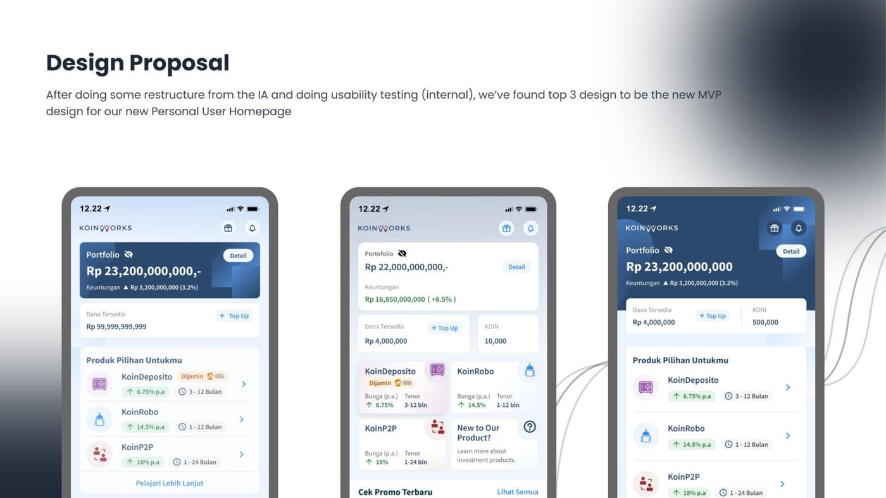
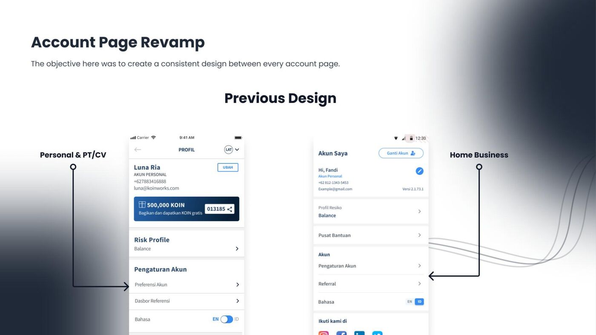

KoinWorks is a fintech super app offering P2P lending, business loans, and digital financial services. When I joined, user growth was stalling. The registration flow had high drop-off rates, particularly at the KYC (Know Your Customer) step, which was driven by strict OJK compliance requirements.
The challenge: make mandatory identity verification feel effortless without cutting any regulatory corners.
The existing KYC flow had three core issues. Too many form fields on a single screen with no sense of progress. No real-time validation, so users would fill everything in, hit submit, and get a wall of errors. And the flow didn't differentiate between personal investors and UMKM business accounts early enough, so business users were stuck in a flow that wasn't built for them.

I worked with the UX researcher to conduct stakeholder interviews and review existing analytics. We identified the three highest-friction points in the flow. From there, I restructured the information architecture: breaking the single long form into progressive steps with clear progress indicators, adding real-time field validation so errors surface immediately, and separating account type selection to the very first step so the rest of the flow adapts accordingly.
We ran two rounds of internal usability testing on the redesigned prototype before shipping to production.

The final design broke registration into 5 clear steps with contextual guidance at each stage. Account type selection happens first, adapting the subsequent fields. Real-time validation catches errors as users type. The e-KTP photo capture step includes explicit guidance for lighting and positioning to reduce rejection rates. Every step shows clear progress and lets users go back without losing data.

Beyond onboarding, I led the Personal User Homepage redesign. After restructuring the IA and running internal usability testing, we tested three MVP design directions and shipped the one that best balanced portfolio visibility with product discovery.

I also redesigned the Account Page to create a consistent experience across Personal and Home Business account types, consolidating promo, voucher, and referral entry points into a single unified layout.

I designed the voucher and promotion systems that powered repeat engagement. The promo system included voucher distribution, redemption flows, and referral mechanics that together drove a 30% increase in repeat transactions.